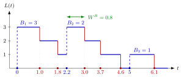

Batch-Arrival Queue¶
Definition¶
In the queue jobs arrive in batches. Batches arrive as a Poisson process with rate , and the numbers of jobs in the batches are i.i.d. copies of a batch size . The service time of the th job of batch is an i.i.d. copy of , independent of the batch sizes. There is one server. An arriving batch joins the end of the queue; when it reaches the head of the queue, the whole batch moves to the server, which then serves its jobs one after another.
Jobs arrive at rate , so the load is
and, as always, is required. Write for the number of jobs in the system, for the number of batches in queue, for the number of jobs of the batch at the server (zero if the server is idle), and for the survivor function of .
Interpretation¶
A single arrival event can bring several jobs at once, so the number in the system jumps up by a whole batch but still goes down one job at a time. Even with the same job arrival rate and service rate as an M/M/1 queue, queues are longer (unless every batch contains a single job), because the jobs of one batch must wait for each other.

In the sample path of the figure, batches of , and jobs arrive at times , and , and the six services take , , , , and time units. Each upward jump has the size of a batch; each red departure lowers by one. The second batch finds one job still at the server and waits from to , its batch waiting time .
The Poisson assumption concerns the batches: by PASTA, arriving batches see time averages, so . Individual jobs do not arrive as a Poisson process, because jobs of the same batch arrive at the same moment (TF 5.3.3). By the memoryless property of exponential services, the number of jobs alone describes the state, so a level-crossing argument applies. The new feature is that one batch can up-cross several levels at once: a batch that sees jobs up-crosses level exactly when it contains more than jobs.
In Kendall's notation the superscript marks the batches. The same batching model returns in Week 6 for batch processing with server setups.
Key Results¶
- Load. By rate stability, , and the long-run fraction of time the server is idle is .
- Jobs at the server. By the renewal reward theorem, for , and (5.3.3) .
- Mean waiting time. The batch-arrival waiting time formula (5.3.4) gives and, by , also ; it requires .
- Level crossing with batches (5.3.5). For , . The left side merges the thinned Poisson streams of batches that see jobs and contain more than ; the right side is the down-crossing rate, as jobs leave one by one.
- No closed form. In general the recursion does not give in closed form. Numerically, start with , apply the recursion until the weights are negligible (for a batch size bounded by , compute at least values first), and normalize. The check must hold.
- Rejecting batches instead bounds the state space; see batch rejection policies.
Examples¶
1. Jobs at the server (data of Exercise 5.3.6). Batches arrive at rate per hour, , and minutes hour. Then , and . The survivor function is , , , so
These sum to , the fraction of time the server is busy. Their mean is jobs, and (5.3.3) gives the same: .
2. Running the recursion. Let be or with probability each, and , so , , and for . With ,
The weights sum to , so and , as it should be; , , . The code below, a Python version of the notes' algorithm, reproduces these values; its mean is , against for an M/M/1 queue with the same load.
def batch_stationary(lam_B, mu, G, K_B, eps=1e-10):
q = {0: 1.0}
n = 0
while n < K_B or q[n] > eps:
q[n + 1] = lam_B / mu * sum(q[m] * G(n - m) for m in range(n + 1))
n += 1
total = sum(q.values())
return {n: qn / total for n, qn in q.items()}
G = lambda i: {0: 1.0, 1: 0.5}.get(i, 0.0) # B = 1 or 2, each w.p. 1/2
pi = batch_stationary(1, 3, G, K_B=2)
print(round(pi[0], 4), round(pi[1], 4)) # 0.5 0.1667
3. Jobs are not Poisson. In Example 1, jobs arrive at rate per hour. Treating them as Poisson arrivals at that rate, that is, as an M/M/1 queue with , would give . The batch model gives (Exercise 5.3.6, worked out on the batch-arrival waiting time page), so ignoring the batches understates the queue by .
Prerequisites¶
- Kendall's Notation
- Rate Stability
- Level-Crossing Equation
- Poisson Arrivals See Time Averages
- Survivor Function
Related Concepts¶
- Batch-Arrival Waiting Time
- Batch Rejection Policy
- M/M/1 Queue
- Renewal Reward Theorem
- M/G/1 Departure-Epoch Chain
- Squared Coefficient of Variation
- Server Setup
Sources¶
- Stochastic Operations Research · Week 5
- N. D. van Foreest, Sample Path Analysis and Simulation of Stochastic Systems, Section 5.3
Aliases: M^B/M/1 queue, MB/M/1 queue, M^X/M/1 queue, bulk-arrival queue, batch Poisson arrivals, compound Poisson arrivals queue Keywords: \lambda_B, batch size B, \rho=\lambda_B\mathbb{E}[B]\mathbb{E}[S], L_s^B, Q^B, survivor function G(i), multiple up-crossings, batch level-crossing recursion Symbols: element of, infinity, lambda, mu, pi, rho, sum
Last updated: 29 October 2026 20:42
Batch-Arrival QueueBatch-Arrival Waiting TimeBatch Rejection PolicyKendall's NotationRate StabilityLevel-Crossing EquationPoisson Arrivals See Time AveragesSurvivor FunctionM/M/1 QueueRenewal Reward TheoremM/G/1 Departure-Epoch ChainSquared Coefficient of VariationServer Setup